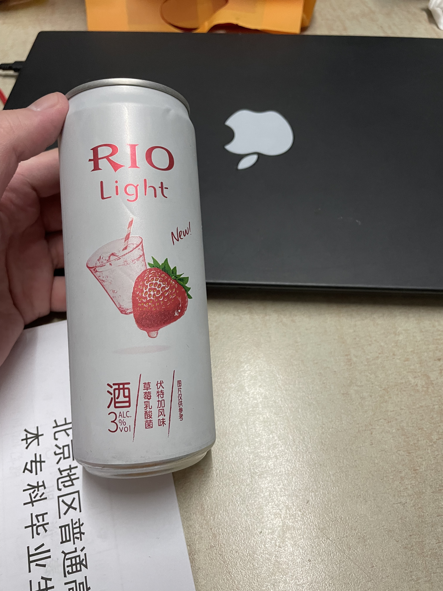

我与荷塘——记最后一段在你清的时光
说起来第一次到你清还是2013年十一，当时还不需要预约，只需到西门登记身份证即可入校。当时是一位参与志愿讲解活动的学长带我和父亲参观了清华园。其中我印象最深刻的就是，《荷塘月色》的荷塘并不是朱自清像所在的池塘（即工字厅北边的池塘），而是在近春园。这也是我跟荷塘的第一面。后来真正去到清华上学，不管遇到作业写不出来压力山大，或者遇到情感问题，也有时候只是闲得无聊，就会骑车去荷塘转一圈。春天争奇斗艳的鲜花，夏天的一片片荷叶，秋天清冷的月光，以及冬天的皑皑白雪，一年四季景色各异，但都别有韵味。
荷塘在晚上几乎无人，而且还被高大的杨树林环绕，于是就成为一个几乎只有我自己的场所，可以在里面尽情地歌唱。虽然这样有点自私，但是大清有几个私人场所呢…….与其在紫操扰民，不如去静静的荷塘里唱歌，只能对被打扰的花鸟鱼虫说声抱歉了。虽然清华周围有数量众多的KTV，但是一个人去很奇怪，而且我喜欢的歌曲大多冷门，在KTV大概率找不到，因此不如自己拿着手机唱，倒还省一笔费用。
虽然之前也经常去唱歌，但是我至今铭记最深刻的还是2022年的5月。因为北京新冠病例一天比一天多，学校一开始跟之前一样封校（但是允许实习等正当理由出校），接下来甚至实习都不准，出去办美签都费了点功夫，回校后被隔离了三天。接下来，一道横贯清华园的铁幕落下，铁皮墙把学生区整个围了起来，再加上毕设查重日期逼近，我却一直摆烂，因此气氛变得极其压抑。幸好荷塘被隔在了学生区，我还能过去松口气，并且还没有了家属区小孩子和钓鱼佬的干扰，于是荷塘就成为了我的乐园。
那段时间每天在图书馆肝论文，肝到晚上闭馆的时候直接背上书包，前往荷塘，找到水边的那条隔着茂密的植物，不容易被人看到的小径，然后对着月光或者星光歌唱，也有时候只是听歌，抑或就呆呆地站着。唱得最多的当然是日语歌曲。首先想到的是五木ひろし的《よこはま·たそがれ》和《夜明けのブルース》，2021年9月的时候第一次听到这两首然后就喜欢上了，记得当时在校内呆腻了，骑车去清河边上唱。“ここは松山二番町の店渋い男の夜明けのブルース”，带着一点泡沫经济的繁华气息的歌曲，非常喜欢那种淡淡的忧伤和80年代日式浪漫。同样是五木ひろし的《山河》也很喜欢，是一首中华风的歌曲，带一点宏大叙事的味道，缺一点日式浪漫。
然后是《いい日旅立ち》，因为山口百惠版本的音调太高，所以我只能唱谷村新司版本的，当然听还是更喜欢听山口百惠的。第一次听到这首歌是在18年夏天，但是收藏进歌单之后就再也没听过，直到21年寒假。那个寒假因为怕回家之后就回不了学校，然后在家里学不进去、因为个人空间等事情跟父母争吵，于是整个假期都没有回家，也被封在校园里一个寒假。中间出校两次，一次逛了北海公园、景山公园和陶然亭，因为前一天几乎没睡所以整天都恍恍惚惚；还有一次吃了鹤一烤肉，运转了16号线新开的路段，为了最大化出校时间，还一直坐地铁到四惠东再坐回学校。整个假期心态极其压抑，几乎什么都没干，直到开学前一天同学们都逐渐回来了才稍好些。那天北京遇到了前所未有的大升温，在2月升到了25度左右，甚至可以穿短袖。春日的暖阳是非常能提升幸福感的，在那个下午骑车前往家属区转悠，看到一面土墙上画着一朵简陋的红花。不知道是哪个好事者在那里画的一朵花，但很让我感动，不禁想到了那首诗《相信未来》。相信疫情总会过去的，生活总会好的。

红花
也就是在那个时候，我把很久以前收藏的《いい日旅立ち》翻出来听，然后就成为了目前我网易云里听过次数最多的歌曲。听到这首歌就让我想到夕阳西下的山阳本线，从尾道、到广岛、岩国、柳井、德山，波光粼粼的大海与时不时驶过的黄色115系电车，而我则静静地看着大海，吹着潮湿的海风。“いい日旅立ち 夕焼けをさがしに 母の背中で聞いた歌を道連れに”，总归是要启程前进的吧。当时已经对国际旅行感到绝望，想着什么时候才能再去到日本，到时候115系和381系还在不在………虽然23年把这些都坐了一遍，这个梦想总归是实现了。在尾道的千光寺山上，在大畠站，在吴线的电车驶向三原站的时候，这首歌一次次在我脑海中响起。

尾道千光寺山上的樱花
然后是《襟裳岬》。小时候父亲的车上经常放着邓丽君的歌曲，因此听了这首歌很多遍，但是当时不会日语所以也听不出什么来，就记得一句“夜里某no哈路挖”。22年初回家的时候又听到这首，于是听歌识曲，查阅百科，发现原唱是森進一。这两个版本我都听过，感觉各有各的特色，而且二者都挺喜欢，不过最喜欢的是youtube上那个二人合唱的版本。想到春寒料峭之时，在襟裳岬暖和的小木屋里，一边品着咖啡，一边跟友人畅谈的样子。
以及《北国の春》。小时候听过蒋大为版本的，也经常在公园合唱的人会唱这首，后来才知道是千昌夫原唱。这首歌唱起来朗朗上口，音高也很合适，让人想到上世纪的中日蜜月期，各种日本歌曲、电影等引入中国，两国人民史无前例地走向友好。并且这首歌还让我想到远野，在油管上看前面展望的时候对远野的清新明快的风景印象非常深刻，蓝天白云，山上的树木郁郁葱葱，田野里山吹花在绽放。作者千昌夫就是岩手人，可以想象上世纪七八十年代，在东京生活的打工人坐着夜行列车回到家乡，一觉醒来看到高耸的岩手山，广袤的田野，以及即将要见到家人和喜欢的人的那种喜悦之情。
还有《東京音頭》。其实知道这首歌是因为《東京五輪音頭》，2018年看到过很多次石川小百合演唱的、宣传2020奥运会的重制版本，所以也听了1964的原版。听着这首歌就想到18年的日本，熙熙攘攘的人流，眼花缭乱的霓虹灯，街头巷尾无不洋溢着欢快的迎接奥运的欢快气氛。这算是疫情前最后的辉煌了，想起来疫情几年经常看到有人发微博，各种商店倒闭停业，京都鸭川边冷冷清清，当时根本不敢想之后能够恢复多少，觉得这种萧条是多少年都难以挽回的，也觉得最终2020东京奥运会被搞成这个样子挺遗憾的……..
回归正题，《東京五輪音頭》其实取名于《東京音頭》，是一首1930年代的歌曲，因为有一部分歌词宣扬军国主义，后来被删掉了。这首歌相当欢快，经常跟着节拍来跳乱七八糟舞。
当时也并没有局限于日文歌曲，还唱过许多英文歌曲。《As Time Goes By》和《Casablanca》是我最喜欢的两首英文歌。年初看了电影《Casablanca》，才知道《As Time Goes By》才是电影主题曲，而《Casablanca》则是作者Berty Higgins跟女朋友看完电影之后给她写的。但是无论如何，我觉得这两首歌都是我见过的最浪漫的英文歌。在夕阳下，热恋的情侣看完电影，坐在车里拥抱、亲吻，随着时间流逝，爱意永不消散，愈发浓烈。
还有《Hotel California》。算是很经典的老歌了，在荷塘边畅想之后在加州的生活。当然这首歌后来在LA也听过好多次，在Muholland Drive上看夕阳，在Malibu（2025.1.12更新：烧了😭）的海滩边，在LAX拍飞机，在downtown远眺雪山（更新：Eaton也烧了😭），在San Clemente看到远处山上层层叠叠的房子，还有载着远道而来的母亲从北加南下，走I5开进LA的时候。

Muholland Drive晚霞
然后是中文歌吧。当时把一些beyond的歌捞了出来，虽然黄家驹的声音很高亢，但是发现我还是能唱得上去的。最经典的《海阔天空》、《光辉岁月》，或者是冷门一点的《俾面派对》（结尾的吉他真的很好听），伤感的《冷雨夜》，深沉的《大地》《农民》，还有被禁的《长城》（可笑的是在网上搜《长城》被禁，搜出来说是版权到期了所以下架🤣），以及重金属风格的《我是愤怒》。beyond的很多歌曲都是赞颂自由与民主，反对腐朽落后，想到当时到处封城，自己也被封在学校内，还挺感慨。
5月31号，把毕业论文交了，最后的答辩就很简单了。6月1号美签check完毕，虽然当时还没解封，直到6月7号左右才允许审批出校，于是我借寄护照的名义出去转悠了一圈，时隔一个多月终于呼吸到了自由的空气，坐着地铁13号线绕了北边一大圈，就为了看风景。当然我后来被判定为密接又是另一回事了。递签之后，坐着200外又到潭西胜境，去看望了那里的猫猫。

发现当年并没有在潭西胜境看到猫猫，倒是有大鹅

这个天蓝得像假的一样，怀念😭
翻照片才想起来当年经常去c楼地下买点rio喝
（后面的事情暂时略，跳过到毕业典礼）
离校前一天晚上，校园被湿气笼罩，闻起来甚是舒服。突然就回想起17年入学和军训的事情。于是走到紫操上，又一次唱起了那首secret base。回想当年躺在草坪上，无心参与军训的团建活动，只是哼着这首歌，看着星空，展望未来，不知道大学几年会发生什么呢。于是在告别的日子，这首告别的歌终于变得应景，五年时光匆匆过去，就将着最后的美好回忆作为大学生活的结尾吧。

毕业典礼当天，我骑车来到你清，在校门口做了抗原检测（好像是人生中第一次，虽然一共也就做过三次。说起来22年春天之前核酸的次数也是屈指可数，基本上都是为了回家/回学校。核酸的离谱事情先略，总之最后一次做核酸是2022年8月22号在深圳。）之后回到了阔别几天之久的宿舍，拿上了之前被丢在那里的领带。毕业典礼其实没什么意思，拨穗之后回宿舍睡了一会儿，然后最后一次去你清食堂吃了饭。幸好当时卡还没注销。本来打算线上注销的，毕业证也邮寄到住处，但是既然都回学校了就自己办了。
下午骑车去自动化系教务处，拿了毕业证和学位证，销了卡。骑车在校园里逛了半天，找了几个猫点去看望猫猫，去荷塘唱了《蛍の光》。作为毕业歌，确实很应景。最后发现工字厅开放参观，过去了然后发现正好关门了。工作人员让我第二天再来，但是我马上就要离开你清校园了……..以当时疫情的形式，真不知道什么时候才能再回去。
总之这就是在你清最后的一段时光，那一个个在荷塘唱歌的夜晚，至今觉得如梦似幻。
2025 update
24年12月，终于回到了清华。骑车转了几个对我有纪念意义的地方，比如（翻新后的）紫七，当年没有等到的北体，教室区域，大礼堂，荷塘等等，恍如隔世。找了个教室睡了会儿，看着学弟学妹们拿着电脑学习（或者打游戏），情侣坐在一起聊天，有点感慨已经毕业两年多了。从此我去往了更大的世界。